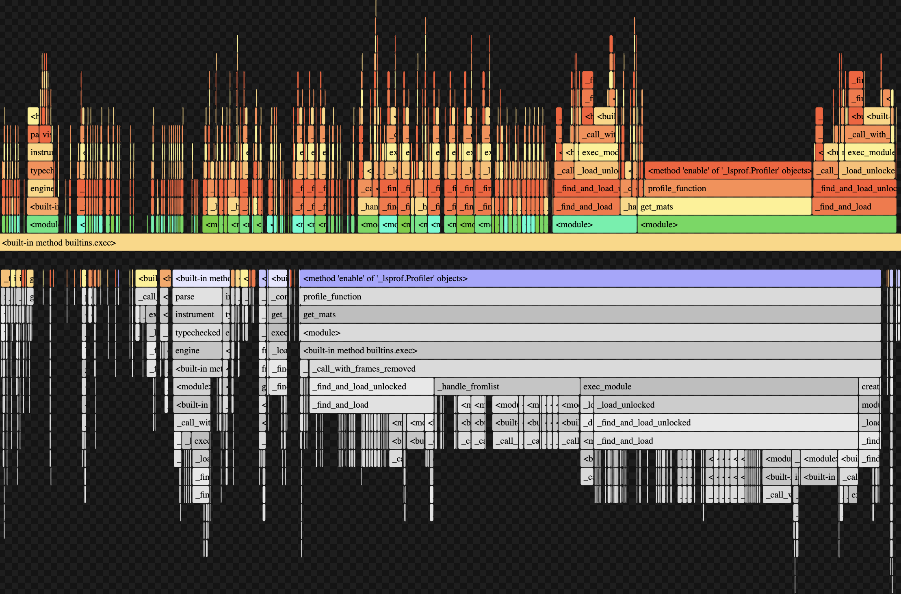

Introduction
In our research project, “Ontologies in Language Model Unembedding Matrices” we ran many long-running tasks. Due to the long-running nature of these tasks, optimizing the efficiency of these processes were important to effectively and quickly produce results from large datasets. Throughout the process of our code optimization, we utilized many methods to improve the efficiency of our programs including our use of profiling tools and data-driven optimization which helped us produce efficient data collection.
Transforming Matrices
One of our most time consuming functions that we wanted to optimize was generate_unembeddings_matrix. This function computes the causal inner product matrix. Getting the unembedding matrix requires loading the model weights from disk to memory. Scores require computing the eigenvalues and eigenvectors of the covariance matrix of the unembedding matrix. The eigendecomposition is used to apply the causal inner product, a transformation derived by Park et. al. The causal inner product requires multiplying the inverse square root of the covariance matrix of the unembedding matrix by the centered unembedding matrix. The inverse square root can be conveniently computed through the eigendecomposition.
Prior to starting this optimization, we knew that the outer function that computes the causal inner product matrix was slow, but we weren’t sure why, we suspected that loading the model from disk through the subfunction, “OLMoForCausalLM.from_pretrained()” was the cause. This function computes a transformation of the unembedding matrix from a causal language model (CLM), specifically from an OLMo model (a model from AllenAI) and saves the transformed matrix.
However, after profiling the generate_unembeddings_matrix function, we learned that “OLMoForCausalLM.from_pretrained()” ran much faster than expected and most of the time was actually spent on calculating eigenvalues and eigenvectors of the covariance matrix. We calculated this using eigh() which was the most time consuming sub function of generate_unembeddings_matrix().
As you can see from the snippet of our profile output of run_single_step() which calls generate_unembeddings_matrix(), eigh() takes up a cumulative time of 119.739 seconds per call compared to generate_unembedding_matrix()’s time of 141.9s (84.4% of generate_unembeddings_matrix() total time). Through this profiling process, we realized that we needed to focus on optimizing our call to eigh() above all other sub functions.
From this information we realized that we could load in numpy arrays more quickly by using CUDA GPU rather than running these calculations on the CPU which is torch’s default setting. By using profiling to objectively identify time consuming processes instead of relying on our intuition to determine what seemingly would be the most time consuming, we could focus our optimization analysis on the more time consuming process, eigenvalue calculation.
$$ g(y) = Cov(\gamma)^{-\frac{1}{2}}(\gamma(y)-\mathbb{E}[\gamma]) $$We need to calculate the $ \text{Cov}(\gamma)^{-\frac{1}{2}} $. In order to calculate this optimally, we can compute the eigenvalues of the Cov matrix and use the matrix multiplication rule:
$$ A^k = Q\Lambda^kQ^T $$To find that:
$$ Cov(\gamma)^{-\frac{1}{2}} = Q\Lambda^{-\frac{1}{2}}Q^T $$With being a matrix comprised of the eigenvalues of Cov() and Q being a matrix made up of eigenvectors of Cov(). There are several ways that the eigenvectors and eigenvalues can be computed. Both torch and numpy implement eig() and eigh() methods. The difference between eig() and eigh() is that the latter is optimized for Hermitian matrices. We preferred to use an eigh() method since our matrix is symmetric and the eigh method should be faster in theory on symmetric matrices.
Additionally, torch methods can run on the GPU or on the CPU. We ran into issues before with torch, and switched to numpy. This was fine for initial experiments, but eventually the throughput requirements of the project increased and it made sense to consider optimization. Torch on the CPU leads to an error: Intel oneMKL ERROR: Parameter 8 was incorrect on entry to SSYEVD. After reading this issue, it seemed that this was a known issue in pytorch. The size of the matrix sent to eigh() was too big for some low-level interface in torch. However, torch on the GPU worked.
At this point we had two working methods: numpy eigh on the CPU, and torch eigh on the GPU. We added a conditional to the get_unembedding_matrix method to compare and timed each. We ran the get_unembedding matrix on the GPU and CPU for the OLMo-7B model, and found that the CPU implementation took approx 25s and the GPU implementation took approx 5 seconds, a 5x speedup.
Using cProfile
We created a profiling script “profile_function.py” which can profile specified functions and output the profiling information onto a text file.
def profile_function(func, *args, **kwargs):
pr = cProfile.Profile()
pr.enable()
func(*args, **kwargs)
pr.disable()
s = io.StringIO()
sortby = 'cumulative'
ps = pstats.Stats(pr, stream=s).sort_stats(sortby)
ps.print_stats()
output_dir = 'profiling_outputs'
os.makedirs(output_dir, exist_ok=True)
output_file = os.path.join(output_dir, 'profile_output_new.txt')
with open(output_file, 'a') as f:
f.write(f'{func.__name__}\n\n')
f.write(s.getvalue())
return
def profile_function(my_function, *args, **kwargs):
pr = cProfile.Profile()
pr.enable()
my_function(*args, **kwargs)
pr.disable()
This code snippet displays a simple usage of cProfile. First we create a cProfile module, pr and start collecting profiling data with pr.enable(). Then we call my_function with all of its specified arguments and keyword arguments. Finally we end the profiling data collection and now can modify ps to store the profiling data in a text file.
s = io.StringIO()
sortby = 'cumulative'
ps = pstats.Stats(pr, stream=s).sort_stats(sortby)
ps.print_stats()
output_dir = 'profiling_outputs'
os.makedirs(output_dir, exist_ok=True)
output_file = os.path.join(output_dir, 'profile_output_new.txt')
with open(output_file, 'a') as f:
f.write(f'{func.__name__}\n\n')
f.write(s.getvalue())
return
Other Profilers
Beyond cProfile, we utilized flame graphs to visualize the time usage of specific functions and their subfunctions. Visualizing profiling data through flame graphs is an interesting tool to see overall time and CPU calls from functions. However for our purposes of specific code optimization, opting for a more informative and precise method of profiling like cProfile was more useful. This was a profiling visualization of our get_mats() function:
Conclusion
Efficient code execution is essential when working with large datasets and computationally intensive models. Profiling tools like cProfile play a crucial role in identifying performance bottlenecks, allowing researchers to optimize key functions and significantly reduce execution time. Our use of cProfile helped refine critical functions such as get_mats() and generate_unembedding_matrix(), ensuring that matrix computations and model processing were performed as efficiently as possible.
Through profiling, we were able to challenge initial assumptions about performance bottlenecks, demonstrating the importance of data-driven optimization rather than relying on intuition alone. The insights gained from cProfile allowed us to focus our optimization efforts where they would have the most impact, such as reducing unnecessary model loading times and improving matrix computation efficiency.
In summary, profiling tools like cProfile are invaluable in research involving large-scale computation, such as language modeling, data analysis, and neural network training. By incorporating profiling into our workflow, we significantly improved our program's efficiency, demonstrating the importance of systematic performance analysis in computational research.